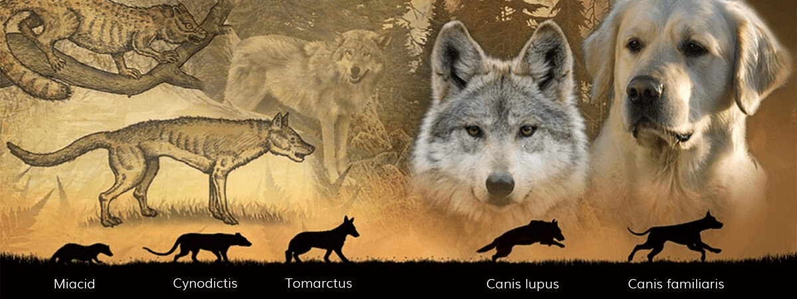

Hoe zijn de honden die we nu kennen ontstaan?
Geen enkele andere diersoort vertoont een dergelijke diversiteit. Vandaag bestaan er meer dan 400 hondenrassen, in de meest diverse vormen en maten, zonder alle kruisingen mee te rekenen. Ondanks deze grote verscheidenheid maken alle gedomisticeerde honden deel uit van dezelfde familie, Canis familiaris, die op basis van de dna-analyse teruggaat tot de Canis lupus, de wolf. Dankzij het vermogen om zich aan te passen aan verschillende omgevingen en om tot een bepaalde sociale organisatie te komen, is de wolf in staat geweest om in de natuur te triomferen. Om dezelfde redenen was hij eveneens goed voorbereid om zich aan te passen aan het gedomesticeerde leven. Eigenlijk is het de gedomesticeerde wolf die het meeste succes heeft gehad. Vandaag zijn er meer dan 400 miljoen honden in de wereld, terwijl er slechts ongeveer 40.000 wolven in het wild overleven.
De tijd dat de voorouders van uw cocker in de bossen rondzwierven, ligt al heel ver achter ons. Maar hoewel dit niet zo vanzelfsprekend lijkt, heeft onze hond nog veel gedragskenmerken van de jonge wolf overgehouden: de speelsheid, de behoefte om op ontdekking te gaan en de wil om een oudere of een leidersfiguur te volgen. De capaciteit van de wolf om zijn sociale organisatie te laten variëren (hij kan namelijk alleen leven, met zijn tweeën of in een grotere groep), zijn uitstekende communicatieve vaardigheden en zijn behoefte om stabiele sociale relaties aan te knopen, werden allemaal overgedragen op de hond. Op het vlak van gedrag lijkt de hond dus op een wolf die nooit is opgegroeid of op een mens die altijd 11 jaar is gebleven. Elk ras heeft namelijk een bijzonder talent om te rennen, te bewaken, een kudde te drijven enzovoort. Al meer dan 12.000 jaar hebben honden een speciale relatie met de mens. Mensen en honden zijn vrienden geworden toen de wolven tijdens het mesolithicum in de kampen van mensen op zoek gingen naar voedsel. Onze voorouders ontdekten al snel dat de "honden" hen konden helpen bij het zoeken en jagen naar dieren.
Wolven die het best de mensen konden verdragen, ontwikkelden zich toen. Toen de mensen in dorpen bij elkaar begonnen te wonen, realiseerden ze zich dat de jonge wolven konden worden getemd en gebruikt voor nuttige doeleinden. Ze begonnen de honden uit te kiezen met wie ze het beste vriendschappelijke contact hadden en ze brachten ze groot voor hun fysieke en gedragskenmerken. Wij hebben onze "wolf" zo grootgebracht om een bepaald nuttig gedrag te versterken. De wolf heeft zijn veelzijdigheid behouden, maar sommige hondenrassen zijn zodanig geëvolueerd dat ze nu op sommige vlakken betere vaardigheden vertonen dan hun voorouders. De speurhond is nu beter toegerust om een geur te volgen, een Duitse herder kan beter bewaken, een windhond is sneller, de terriërs zijn taaier en een Cavalier King Charles blijft beter op uw schoot zitten dan een grijze wolf ooit heeft gekund!
Vanaf het jaar 700 is de fokkerij een meer verspreid fenomeen geworden. Het eerste erkende "ras" leek waarschijnlijk op een snelle, grote en magere windhond die werd gefokt voor zijn snelheid bij de jacht. Na verloop van tijd heeft de mens rassen gefokt met meer gespecialiseerde capaciteiten, zoals windhonden die over een uitzonderlijk gezichtsvermogen en geurzin beschikken. De vormen en maten zijn dienovereenkomstig geëvolueerd: kortere snuiten, kortere poten, een fijner gehoor en een scherper gezicht. De fokkerij was in die tijd van het Romeinse Rijk zo verspreid dat de meeste huidige grote rassen toen al bestonden.
bron: Purina.nl